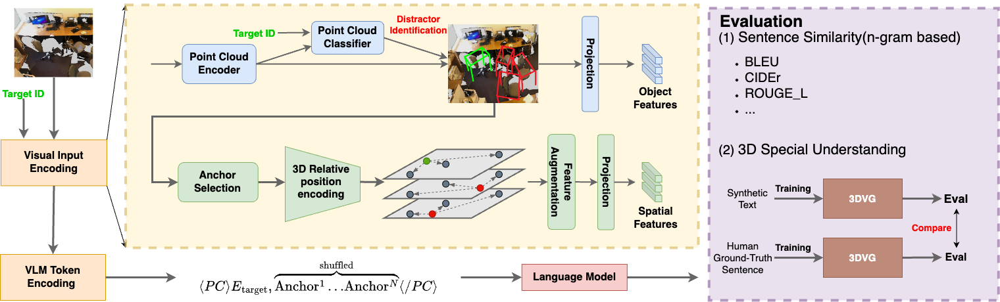
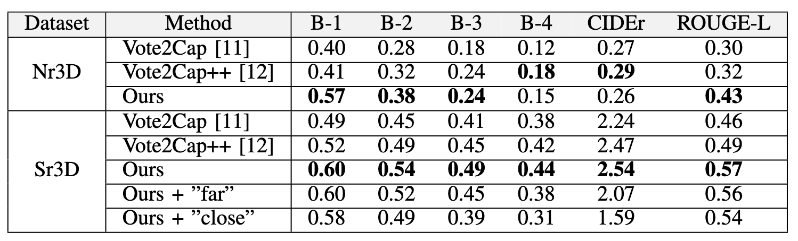
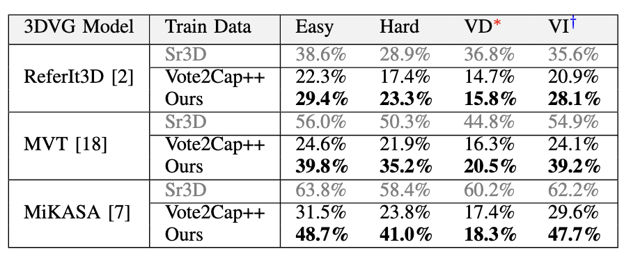
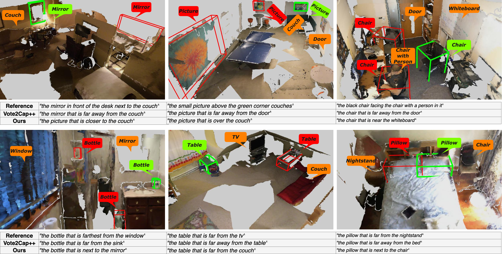

Contextual Object Localization and Disambiguation (COLD)
The COLD task requires a robot equipped with a Multimodal Large Language Model (MLLM) to guide a human collaborator in localizing a specific target object among multiple similar ones (distractors) in complex 3D environments. Unlike traditional captioning, this task not only demands generating a description for an object, but also ensuring the instruction is exclusive to the target and effectively disambiguates it from others. This capability is critical for real-world human-robot collaboration, where precise and unambiguous guidance is essential for effective interaction.
Method

Our training and evaluation pipeline consists of four key steps: visual input encoding, VLM token encoding, LLM generation, and evaluation. The input to the system includes a point cloud and a target ID, which typically comes from upstream tasks such as robot assistants or human-robot teaching interactions, could be a bounding box or just an ID number. In the visual input encoding step, we identify distractors based on the point cloud features of the target object and encode the relative spatial relationships between the target, distractors, and potential anchors. Various token encoding techniques are then applied. During evaluation, we assess the quality of the generated spatial instructions by measuring both sentence similarity and deeper understanding of 3D spatial comprehension.
Insufficiency of Existing Metrics on Evaluating 3D Understanding

Previous works evaluate their performance using metrics such as BLEU, ROUGE, METEOR, CIDEr, and SPICE. While these metrics have significantly contributed to progress in natural language processing—by focusing on surface-level text matching through n-gram overlap, semantic similarity, and lexical fidelity—they often fall short when applied to MLLMs that handle multimodal data and complex spatial reasoning.
The figure illustrates the limitations of conventional metrics. For instance, these metrics assign a high score to text IV, despite its reference to a hallucinated "blue table." Similarly, text V receives a high score even though its critical spatial descriptor "far" directly contradicts the "next" in the reference. Text III, although accurate, is ambiguous because it fails to resolve the presence of multiple nightstands next to a bed, making it ineffective for precise localization. On the other hand, texts I and II, which provide more contextually appropriate anchor references, receive lower scores—highlighting how these metrics overlook spatial accuracy.
Even advanced metrics like METEOR, CIDEr, and SPICE, which attempt to capture semantic meaning and sentence uniqueness, encounter similar shortcomings in the context of our task.
Evaluation on Existing Metrics

Performance comparison of different models on the Nr3D and Sr3D test datasets, showing that our approach outperforms Vote2Cap++ across several metrics. However, we also observe that while these conventional metrics effectively measure sentence similarity, they fail to capture the nuanced 3D spatial understanding. In the Sr3D evaluation, we manually replaced all words related to spatial relationships with either "far" or "close", resulting in only a slight drop in performance. This suggests that n-gram-based evaluations alone may not be sufficient to fully assess a model's ability to generate precise instructions that can disambiguate target objects from distractors.
Evaluation with 3D Visual Grounding

To address the limitations of existing metrics, we use the text generated by the MLLM as synthetic training data to train various 3D Visual Grounding (3DVG) models. The underlying idea is that if the generated instructions are human-like and accurate enough, then 3DVG models should be able to learn from them and perform well on human-annotated test sets.
Comparisons with human-created ground truth data show that our model generates textual instructions that not only closely resemble human-written descriptions but also enable 3DVG models to develop spatial understanding in a human-like manner.
While we acknowledge that this evaluation may be influenced by the current limitations of 3DVG models, we believe that combining conventional metrics with 3DVG-based evaluation offers a more comprehensive and robust analysis. As 3DVG models continue to advance, we anticipate that this evaluation strategy will become even more reliable and effective in the near future.
Qualitative Results

BibTeX
@article{chang20243d,
title={3D Spatial Understanding in MLLMs: Disambiguation and Evaluation},
author={Chang, Chun-Peng and Pagani, Alain and Stricker, Didier},
journal={arXiv preprint arXiv:2412.06613},
year={2024}
}